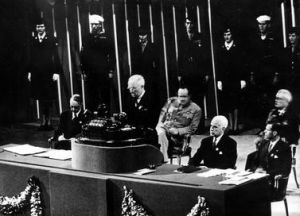

El mundo en ruinas se da una casa común contra la guerra
Con el depósito de las ratificaciones necesarias, entre ellas las de las cinco grandes potencias, entró hoy en vigor la Carta de las Naciones Unidas firmada en junio en San Francisco. Nace una organización que se propone preservar a las generaciones venideras del flagelo de la guerra. El papel jura lo que el hierro desmintió dos veces en treinta años.

En el Departamento de Estado, con una ceremonia breve para un propósito desmesurado, quedó hoy formalmente en vigor la Carta de las Naciones Unidas. El acta se completó con el depósito de las ratificaciones que faltaban, entre ellas la de la Unión Soviética, sumada a las de China, Francia, Gran Bretaña, los Estados Unidos y la mayoría de los cincuenta y un países firmantes. Desde hoy existe, en el derecho de gentes, una organización mundial con asamblea de todas las naciones, un consejo de seguridad, una corte de justicia y un secretariado: parlamento y tribunal de un mundo todavía humeante.
La Carta fue firmada el 26 de junio en San Francisco, tras dos meses de deliberaciones, cuando aún se combatía en el Pacífico. Su preámbulo dice lo esencial con palabras que merecen citarse enteras: «Nosotros los pueblos de las Naciones Unidas, resueltos a preservar a las generaciones venideras del flagelo de la guerra...». Las cinco grandes potencias tendrán asiento permanente en el Consejo de Seguridad y derecho de veto, concesión al realismo que muchos países pequeños discutieron amargamente en San Francisco y que quedó, como tantas otras cosas de la Carta, confiada a la prudencia de los que vendrán.
No hace falta explicar por qué. Dos guerras mundiales en treinta años; un continente entero en escombros, ciudades borradas del mapa, millones de muertos que todavía se cuentan y campos de exterminio cuyos nombres el mundo aprende con horror. Está fresca, además, la memoria del fracaso: la Sociedad de las Naciones, nacida de la guerra anterior con esperanzas parecidas, murió de impotencia ante cada agresión, abandonada por unos y burlada por otros. Y pesa sobre todas las deliberaciones un hecho nuevo que nadie nombra sin bajar la voz: la bomba que en agosto deshizo dos ciudades japonesas en dos relámpagos.
El presidente Truman ha dicho que la Carta valdrá lo que valga la voluntad de cumplirla, y en Londres, en Moscú y en Chungking los gobiernos saludan la fecha con palabras solemnes. Más elocuente es el ánimo de la gente común: los hombres y mujeres que hicieron esta guerra en los frentes y en las fábricas reciben la noticia sin campanas, con una esperanza cautelosa, como quien ya fue engañado antes. Cuentan que en San Francisco, al firmarse la Carta, las delegaciones más aplaudidas fueron las de los países más pequeños: los que no tienen ejércitos ponen en el papel toda su fe.
Este diario no olvida que la generación anterior saludó con la misma tinta a la Sociedad de las Naciones, y le tocó luego escribir su ruina. Sería, pues, imperdonable la ingenuidad. Pero el escepticismo total sería otra forma de deserción. El papel es frágil, cierto: se rompe con la primera bayoneta. También es cierto que es lo único que la especie ha inventado contra el hierro, y que esta vez lo firma sabiendo lo que cuesta no cumplirlo. Que las generaciones venideras, esas del preámbulo, juzguen si el 24 de octubre de 1945 fue una fecha o apenas una ceremonia.